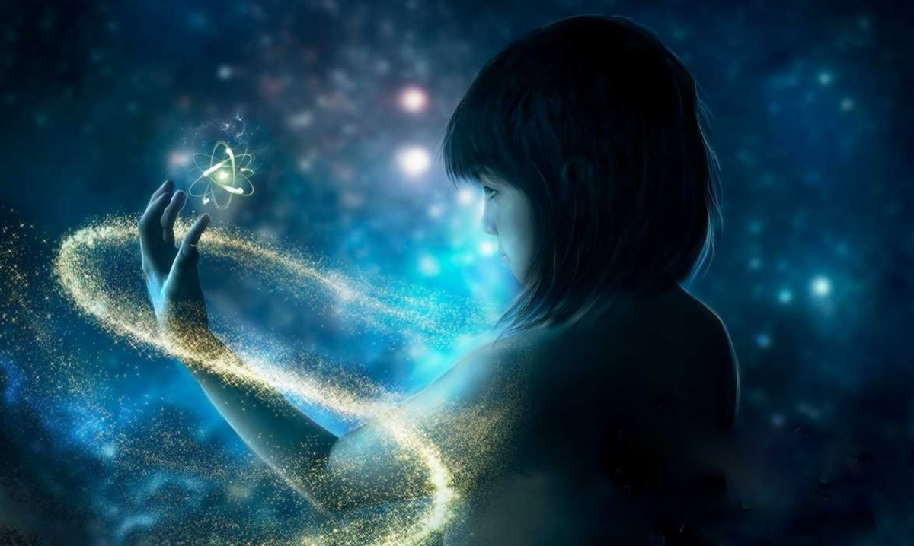

De când e lumea
De când e lumea tataie
Și iepurii din ce lume-au venit
Apa de ce nu are culoare
Și soarele de unde-a răsărit?
Luna stă pe-ntuneric
Când nu e pe cer?
Și greierii nu știu alt cântec
De ce plantele fără apă pier?
Tu te-ai născut bătrân tataie,
De ce laptele e alb și vaca este neagră
Când este noapte, ziua ce face
Stelele au ochi, pământul să-l vadă?
Raspunsul e unul copile dragă
Lumea a fost de când lumea
Și timpul prin lume aleargă
Copii tainele lumii dezleagă!
Vasile Groza